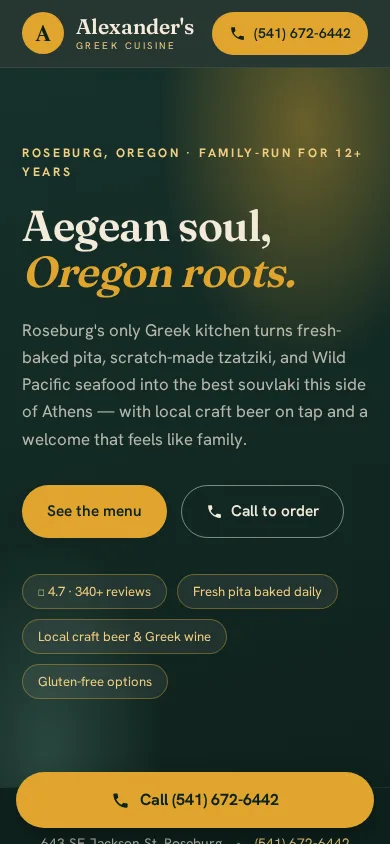

Alexander's Greek Cuisine
Pitch pending
Problem
No owned website: only a listing on a third-party local directory, meaning zero control over their own online presence.
What I built
A full mobile-first landing page: hero, menu, hours, contact, and a Google Maps embed, built and deployed inside a single evening.
83
100
Accessibility 84→100
Best Practices 100→100
SEO 100→100
Agentic Browsing 1/2→2/2
Outcome
Built and deployed. Pitch scheduled. This line updates with deposit and go-live status once the walk-in happens.